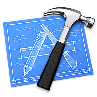

This page of my site is meant to document some of the projects I have worked on both within and outside of the boundaries of acadamia (I will specify which is which). For some of the projects I will include a link to a Github repository where the code is stored. However, due to concerns with the honor code at Virginia Tech, I will not be able to post up the code for particular classes that will not allow it.

Over the summer of 2015 I developed an IOS app, as the sole developer, with Apple's newest mobile language, Swift. I used Facebook's Parse.com and its IOS API to handle the backend of the app. A close friend of mine from high school approached me in the spring of 2015 with an idea for a social media app and I agreed to build it for him. The idea is a form of social media in which users can "post" once per day and each post is to be treated like a blog post essentially. Each post can consist of a picture and/or a video (up to 15 seconds in length) and/or text to describe the day, either briefly or in a more elaborate form. Also included in the app is a community (or category) aspect. When creating a post, the user can decide to post in a specific community that relates to the subject of their post. For example, if I were to spend a day surfing and I wanted to make a post describing my day, I would post to the community "SurfingLyfe". Communities make it easier for users to filter the content they wish to see. I also implemented a "following" feature (called "adding a neighbor") so that users can keep track of their favorite posters. My focus as the only developer was to prioritize the functionality of the app so that we could get it into beta-testing as soon as possible. The app is now in beta-testing on IOS's Testflight and while its aethestics are not up to my personal standards, the app runs very well. Below is a video of myself sampling the app along with a link to a Github repo that I will include SOME of the code running the app.
In September 2014 I joined the RockSat-X program at Virginia Tech, of which I am still a member. Each year we assemble a payload (section in the body of a rocket) for NASA's RockSat-X program. This past year we attempted a feat that had only been done once before. Throughout the year we worked to assemble our own 3D printer that would fit in a typical payload so that we could test 3D printing in space. I worked on the electronics team which handled mostly the electronics for data collection during the flight. In particular I worked on callibrating an Arduino Micro to read data from accelerometers and temperature sensors. I also helped set-up a HackHD camera to be trigured by the Arduino during flight so that we could capture footage of the printer in action.